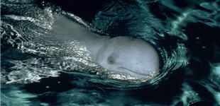

Le dauphin de l'Irrawaddy est parfois classé parmi les espèces d'orques pour leur ressemblance génétique. Son aspect physique est cependant très proche du béluga, qui appartient lui à la famille des monontodés.
|  |
|
Où vit-il ?Près des côtes et les fleuves du Sud-Est asiatique, dans l'embouchure du Gange, jusqu'au Golfe de Thaïlande, au Nord de l'Australie, en Nouvelle-Guinée. Il vit proche des littoraux et remonte fréquemment les fleuves.
Combien en reste-il aujourd'hui ? Ces dauphins ne représentaient plus qu'un millier en 2004 et sont extrêmement difficiles à apercevoir.
Des dauphins rares et populaires : Ils sont piégés par les filets de pêche au Nord de l'Australie. Cette espèce, déjà gravement menacée par les captures accidentelles dans les filets de pêche et les blessures subies lors d'opérations de pêche à la dynamite, est également capturée volontairement pour alimenter les zoos et les delphinariums. Le dauphin de l'Irrawaddy est en effet très populaire en Asie : quelque 80 delphinariums répartis dans au moins 9 pays en détiennent des spécimens. Son entretien est aisé car il survit en eau douce, et la salinisation des bassins peut être évitée. Leur commerce est depuis peu interdit.
A savoir : En Birmanie, une population de dauphins collabore avec les pêcheurs, en rabattant et en coinçant les poissons vers les pêcheurs qui n'ont plus qu'à jeter leurs filets. Ce comportement, qui se produit également au Cambodge et au Vietnam, lui a donné un statut d'animal sacré dans ces pays.